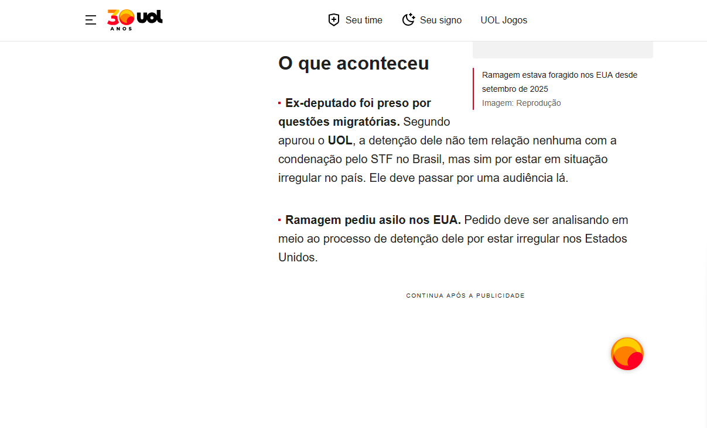

Quantas vezes voçê já viu textos em negrito nos blogs, sites de notícia, no seu youtube, mas não sabia como fazer?
Quando se vai escrever textos, na maioria de todas as linguagens são ofertadas formas de diferenciar partes de seu texto, dando certo destaque.
Aqui você verá como deixar seu texto de uma forma mais chamativa em seu próprio html.
Para deixar seu texto em negrito, você deve usar a tag "b" no meio de seu texto, sim, entre as tags <p>.
Exemplo: <p>texto sem negrito<b>texto com negrito</b>fim</p>
Outra maneira de destacar seu texto, nem tão usada, é deixar seu texto em itálico, para usar esta função, usa-se a tag i.
Exemplo: <p>texto sem itálico<i>texto com itálico</i>fim</p>
No texto, funciona exatamente como o negrito, mas tem um significado oculto, ele dá uma mensagem secreta, para o navegador apenas, então ninguém a vê. Essa mensagem pode ser útil para quem possui alguma deficiência por exemplo, Quando o software encontra um strong, ele pode mudar o tom de voz ou a ênfase da leitura para alertar o usuário de que aquela palavra é crucial.
Exemplo: <p>texto sem strong<strong>texto com strong</strong>fim</p>
Funciona exatamente como o strong, porém este foca na ênfase tônica.
Exemplo: <p>texto sem ênfase<em>texto com ênfase</em>fim</p>
A tag mark é usada para marcar ou destacar partes do texto, criando um efeito de fundo colorido.
Exemplo: <p>texto comum<mark>texto marcado</mark>fim</p>
A tag small é usada para deixar o texto em uma escala menor do que o restante do parágrafo.
Exemplo: <p>texto normal<small>texto pequeno</small>fim</p>
A tag del define um texto que foi deletado (riscado), enquanto a tag ins define um texto que foi inserido (sublinhado).
Exemplo: <p><del>removido</del> e <ins>adicionado</ins></p>
A tag sub define um texto subscrito (abaixo da linha), e a tag sup define um texto sobrescrito (acima da linha).
Exemplo: <p>H<sub>2</sub>O e 10<sup>2</sup></p>
Caso queira revisar, acesse este video que explica o mesmo tema com mais ilustrações, mostrando o código em si. Vai te custar apenas 3 minutos e 30 segundos.
https://www.youtube.com/watch?v=cARjMitpIHgAgradeço aos serviços que me ajudaram na construção desta página, são eles:
GOOGLE. Gemini (3-Rápido.). Resposta gerada a uma pergunta. [S.l.], 2024. Disponível em: https://gemini.google.com/share/4301f597ba1b. Acesso em: 13 de abril de 2026.
W3SCHOOLS. HTML Formatting. [S.l.], [2024?]. Disponível em: https://www.w3schools.com/html/html_formatting.asp. Acesso em: 13 abr. 2026